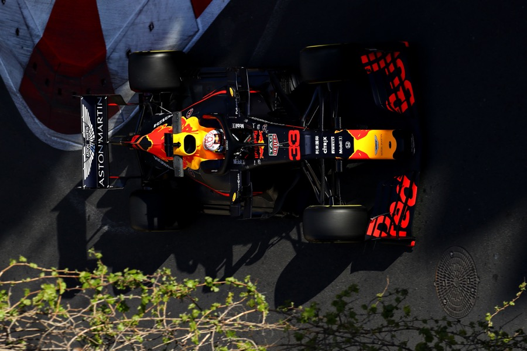

中尾聡
フロントエンド志望です
出身校：松江高専
電子制御工学科所属で、機械、電気電子、情報等、すべての工学系分野について学習。卒業研究はBLEを用いた屋内測位システムの開発で、そこで初めてHTML,JavaScript（Node.js）を知る。
前職:FJQS
担当業務は主に製造業向けSI。CADパッケージのカスタマイズや連携アプリ開発を行い、特にC＃,C++等のC系言語への理解を深める。
コーディング以外にも要件定義、UI設計など顧客と直接会話する工程にも携わり、システム開発における一連の工程を経験した。
趣味：サブカル全般
休日は大抵読書かアニメ鑑賞かゲームをしています。最近オススメの漫画は上の2つ。
それ以外はスポーツ観戦していることが多いです。
